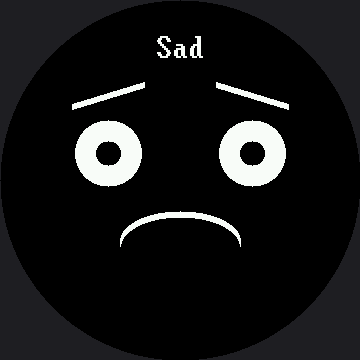

Demo Reel¶
A self-running showcase that needs no buttons at all — the right program for a science fair table, an open house, or a classroom shelf. It cycles through all seven emotions across the full 360 × 360 circle, blinking briefly between each one so the transitions read as alive instead of a slideshow.
The Blink Between Faces¶
That blink is still the whole design idea, and a bigger screen didn't change it. Cut straight from one expression to the next and the face looks like a slideshow. Close the eyes for 120 milliseconds in between and the same sequence looks like a creature changing its mind.
def blink_transition():
display.fill(BLACK)
for x in (LEFT_EYE_X, RIGHT_EYE_X):
for offset in range(STROKE):
# 26 -> 39 on the smartwatch kit
shapes.ellipse(display, x, EYE_Y + offset, 39, BLINK_RADIUS_Y,
WHITE, NO_FILL, TOP_HALF)
sleep(0.12)
Animators Have Known This for a Century
 A blink between poses hides the change and gives your eye something to do while my whole face rearranges itself. It still costs one function and 120 milliseconds — that number doesn't scale with the screen, because a blink is a human-timing thing, not a pixel-count thing.
A blink between poses hides the change and gives your eye something to do while my whole face rearranges itself. It still costs one function and 120 milliseconds — that number doesn't scale with the screen, because a blink is a human-timing thing, not a pixel-count thing.
This Is Where a Full Wipe Is Right¶
After all the warnings about display.fill(BLACK) elsewhere in this book, this lab uses one on
every transition — and that is still the correct call here. It happens once every two seconds,
not sixty times a second, and it guarantees no leftovers from the previous face. On this panel a
full wipe is 129,600 pixels and 259,200 bytes down the SPI wire — 2.25 times what the same wipe
costs on the 1.2" kit's smaller screen — but 2.25 times almost nothing, twice a second, is still
almost nothing.
| Program | How often it redraws | Uses a full display.fill(BLACK)? |
|---|---|---|
| Eye scanner | dozens of times a second, sweeping the pupils | No — erases only the two eye boxes; see Making the Eye Scanner Fast |
| Mode menu | a few times a minute | Yes — and that's fine at this rate |
| This demo reel | once every two seconds | Yes — and that's fine at this rate |
| Partial redraw benchmark | tens of times a second | No — and it measures why not |
Judgment about when an optimization matters is worth as much as knowing how to do it — on a 360 × 360 panel just as much as on a 240 × 240 one.
A Bigger Label, on Purpose¶
show_emotion() prints the emotion's name at the top of the circle, and on this kit that name is
drawn in the 16×32 BIG_FONT, not the 8×16 font the 1.2" kit's demo reel uses. Bitmap glyphs are
fixed-size images baked into lib/ — they don't grow just because the screen did — so promoting
the label to the bigger font is what keeps "Surprised," the longest of the seven names, readable
from across a room instead of shrinking into a caption. At 16×32 it comes out to 144 px, against
roughly 199 px of visible circle at LABEL_Y.
That upgrade has a cost. text() paints a background as tall as the font behind every glyph, so
doubling the font doubled the label's black band from 16 rows to 32. At the naively-scaled
LABEL_Y of 45 (30 × 1.5), that band would have painted straight over the top of Afraid's raised
eyebrow. LABEL_Y moved to 32 instead, which clears it by a single row.
Bigger Screen Does Not Mean Bigger Text
 My glyphs are baked-in bitmaps — they don't stretch just because my face got a bigger screen. Every emotion name here moved up to the bold 16×32 font so it still reads at a glance, and that's the real reason my label sits at row 32 instead of wherever you'd land by just multiplying by 1.5.
My glyphs are baked-in bitmaps — they don't stretch just because my face got a bigger screen. Every emotion name here moved up to the bold 16×32 font so it still reads at a glance, and that's the real reason my label sits at row 32 instead of wherever you'd land by just multiplying by 1.5.
Sample Program Code¶
The seven expression functions are identical to the ones in the expression menu. What is new is the loop at the bottom, which is only five lines.
def show_emotion(name, draw):
display.fill(BLACK)
draw()
x = HALF_WIDTH - (len(name) * FONT.WIDTH) // 2
display.text(FONT, name, x, LABEL_Y, WHITE, BLACK)
def blink_transition():
display.fill(BLACK)
for x in (LEFT_EYE_X, RIGHT_EYE_X):
for offset in range(STROKE):
# 26 -> 39 on the smartwatch kit
shapes.ellipse(display, x, EYE_Y + offset, 39, BLINK_RADIUS_Y,
WHITE, NO_FILL, TOP_HALF)
sleep(0.12)
while True:
for name, draw in EMOTIONS:
show_emotion(name, draw)
sleep(2)
blink_transition()
The full program is 20-demo.py in the kit.
Here's one frame from the middle of the reel:

The reel shows one emotion at a time, so a single picture catches whichever face was up when the image was made — here, Sad. Run it on your own board and you get all seven, two seconds apart.
Things to Try¶
- Delete the blink transition and watch the same seven faces without it. The difference is larger than 120 milliseconds has any right to be.
- Change the hold from 2 seconds to 4. Longer holds feel calm and a little sad; shorter ones feel manic. Find the timing that suits the personality you want.
- Reorder the emotions so the reel tells a story — bored, curious, surprised, happy. A sequence is a narrative, not just a list.
- Add a fade. Show each face, then redraw it with face-sized shapes in a dimmer color before
the blink. You will need a color from
config.color565(); the color bits lab explains how to pick one that stays visible.
References¶
- The Expression Menu — the same seven expressions, driven by buttons
- Standalone main.py — the demo reel plus a button menu, ready to run with no computer attached
- Blinking — where the closed-eye arc used in the transition comes from
- Demo Reel on the 1.2" kit — the same lab at 240×240, with the label in the smaller 8×16 font